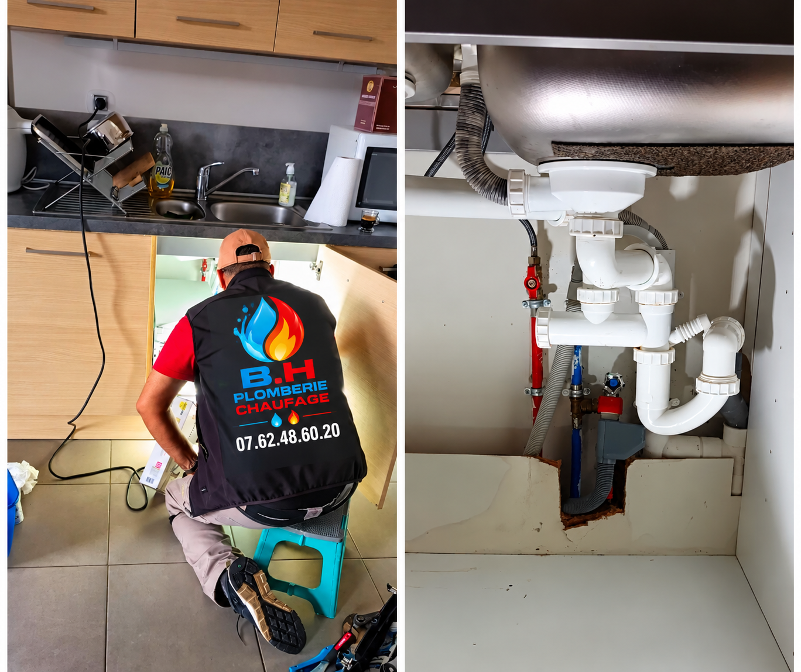

Fuite d'eau
Canalisation, raccordement, robinetterie ou équipement sanitaire présentant une fuite.
Fuite d'eau, souci de robinetterie, panne de chauffage ou installation sanitaire défectueuse : expliquez votre situation directement à votre artisan.

Intervention selon disponibilité, secteur et nature de la panne. Service 24h/24 non annoncé.
Canalisation, raccordement, robinetterie ou équipement sanitaire présentant une fuite.
Chasse d'eau défectueuse, robinet qui fuit, lavabo ou équipement à réparer ou remplacer.
Un équipement ne fonctionne plus correctement ? Décrivez les symptômes pour une première prise de contact.
En cas de fuite importante, fermez l'arrivée d'eau si vous pouvez le faire sans risque. Si de l'eau atteint une installation électrique, éloignez-vous de la zone et ne manipulez aucun équipement mouillé. En cas d'odeur de gaz, sortez, évitez flammes et interrupteurs, puis appelez les secours gaz depuis l'extérieur (GRDF : 0 800 47 33 33, réseau GRDF).
Appelez le 06 85 90 16 77 et indiquez votre commune, le problème constaté, depuis quand il se produit et si l'eau ou le chauffage est totalement coupé. BHPC34 pourra confirmer les possibilités de prise en charge.
BHPC34 · Saint-Drézéry (34). Délais, tarifs et disponibilité à confirmer directement. En cas de danger immédiat, contactez les services d'urgence compétents.